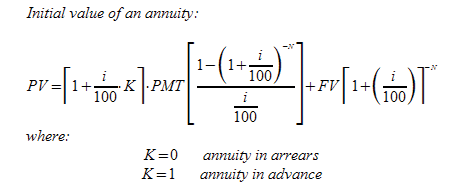
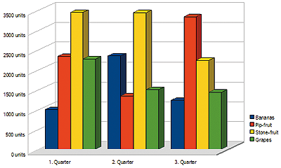
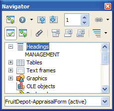

|
 |
Feel the Open Alternative ::
Free Your Office! |
|
|
|
|
It’s Popular
OpenOffice.org is the world's leading open-source
office productivity suite. It has been downloaded more than 130
million times to date, and reaches a broad audience across applications,
languages, and cultures.
|
|
It’s Complete
OpenOffice.org offers complete office productivity
through six integrated applications: Writer for text documents,
Calc for spreadsheets, Impress for presentations, Draw for line
drawings, Base for databases, Math for formula creation. It supports
scripting through macros and offers an integrated development
environment for OpenOffice.org Basic.
|
|
It’s Free
There are no license costs, now or in the future.
It is the perfect alternative to proprietary, commercial products
and it works on Windows, Mac OS X, Linux and Solaris.
|
|
It’s Compatible
Share your documents with people from all over
the world. OpenOffice.org reads and writes OpenDocument
(ODF) and Microsoft
Office documents, and can export your documents
to the popular PDF format. Extend OpenOffice.org to even read
PDF files through the PDF
Import extension.
|
|
|
|
|
Add Complex Equations to Your Text
OpenOffice.org Math provides everything you need
to create professional looking equations, regardless of complexity.

|
|
Include Diagrams and Charts
| A selection of different chart types
and layouts are available to present your data professionally.
You can include diagrams that automatically update when the
source data changes. |
 |
|
|
Long Documents
Made Easy
|  |
Essays or academic thes es
documents can get long, with dozens of tables, diagrams and
images. The Navigator helps you to keep
track and move even through very large documents. The Master
Document functionality allows you to split up document
chapters into files and maintain them separately. |
|
|
PDF at Your Finger Tips
| The PDF format
is a common standard for sharing documents. You can create
PDF documents with
OpenOffice.org in a single mouse click. No extra software
is required. |
|
|
|
Extensible Functionality
Do you want extra functionality? No problem!
Check out the OpenOffice.org Extensions
Repository and find dozens
of extensions that you can use to expand what OpenOffice.org
can do for you.
|
|
Help and support
Online Help, Wikis, and User
Guides are available
to guide you through the applications. A support forum and various
mailing lists on the OpenOffice.org website will connect you with
the OpenOffice.org community, where thousands of users are willing
to help you.
|
|